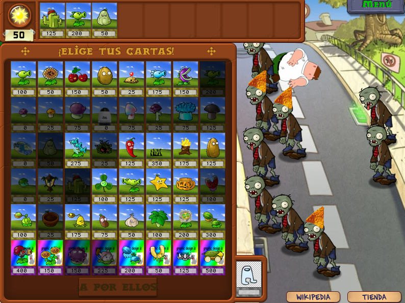
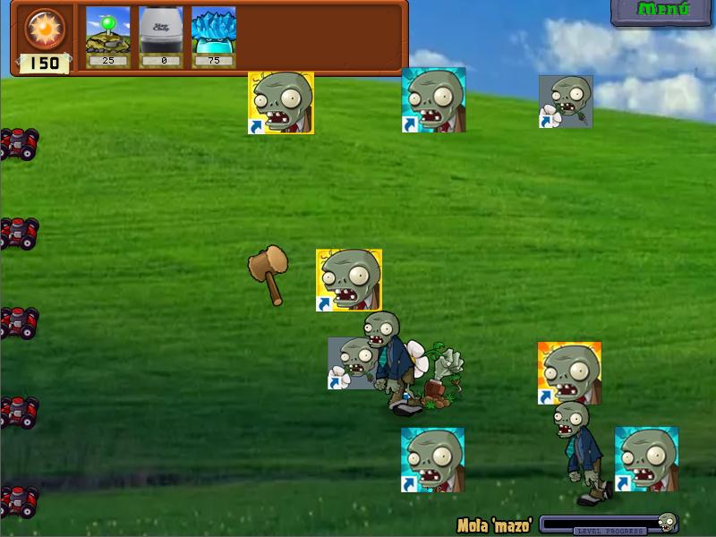
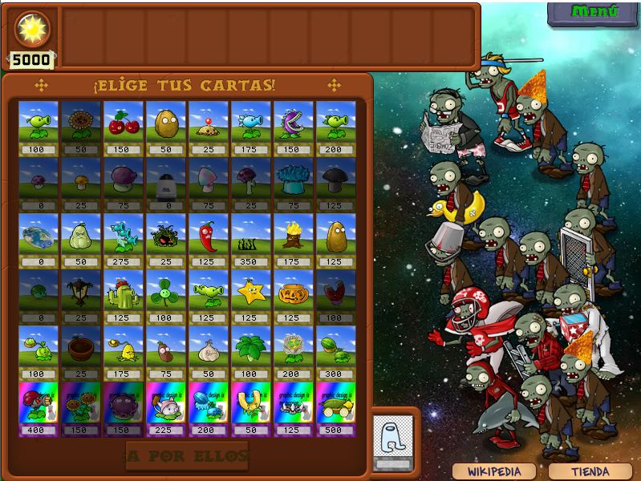
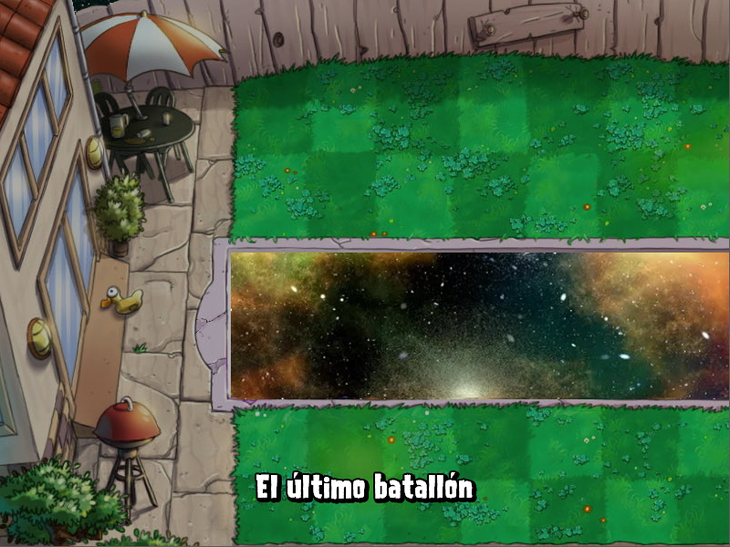

El cosmos en tu jardín
|
Bueno, tengo que mencionar que estas entradas las he hecho meses después de iniciar el proyecto, así que, aunque empecé mencionando los cambios en orden, no voy a intentar mantener un orden exacto, si no que voy a ir comentando cambios varios en torno algún aspecto del juego, para después poder pasar a entradas de los cambios más recientes. Hoy hablaré de las escenas que he cambiado que equivaldrían al patio de día, de noche y con piscina. Primero, estaría el patio de día, que no tiene mucho, simplemente cambié el color del césped a uno más azulado. |
 |
|---|
|  |
|
Luego estaría el patio de noche que, por ahora, ha sido reemplazado por el fondo de pantalla de Windows XP. A parte de no caer soles por ser de noche, en esta escena también están las lápidas, que emergen de la tierra ocupando casillas y que al venir una horda generan zombis. Por la temática de escritorio decidí hacer que las lápidas fueran ahora... |
|  |
| ¡Accesos directos! |
|
Al fin y al cabo, las lápidas les dan a los zombis un acceso directo a tu patio, en vez de entrar desde fuera de cámara. Aún no
he terminado con los zombis de esta escena pero alguno seguirá la temática.
Por último, estaría la piscina, en la que, además de ahora tener 6 líneas en vez de 5, las centrales estarán llenas de agua, por lo que necesitaremos nenúfares para poner plantas en el agua. Decidí cambiar el agua por la inmensidad del cosmos. |
|  |
|  |
|
Aunque también modifiqué un par de cosas del nenúfar, eso irá a una publicación exclusiva sobre plantas, al igual que todos los cambios en los zombis irán a otra. |
| Entrada 1 |
|---|
| Entrada 2 |
| Sección principal |
| Entrada 4 |
| Entrada 5 |